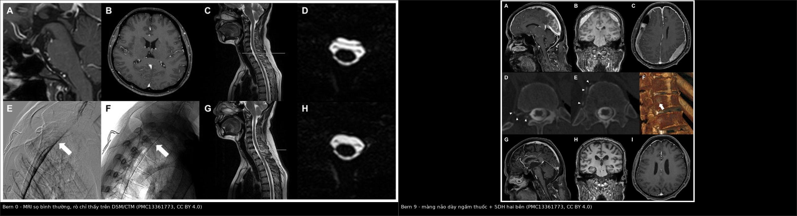
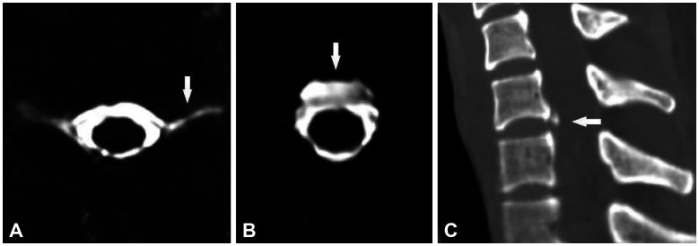
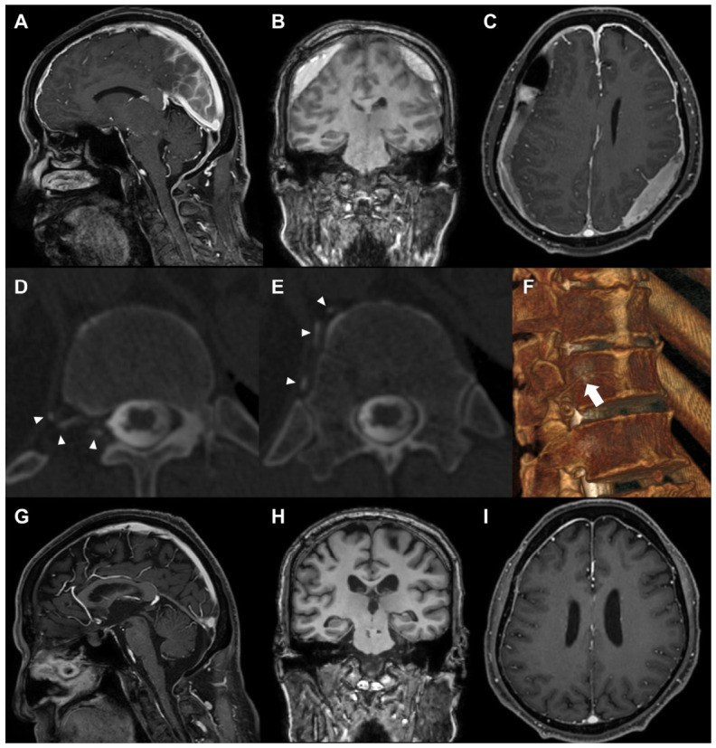
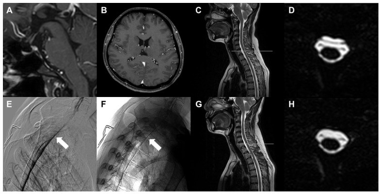
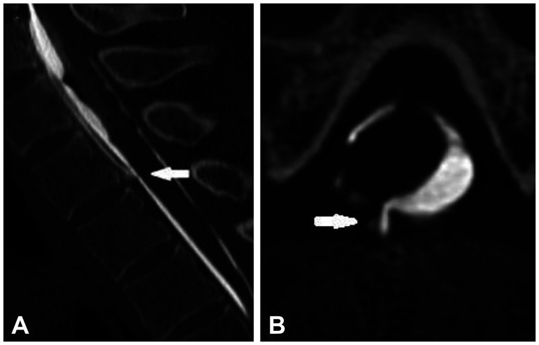

3016 — Hạ áp lực nội sọ tự phát (SIH): MRI sọ, định vị rò bằng CT myelography động, blood patch mù vs nhắm vị trí, khi nào mổ
Tags: pattern:dau-dau-the-dung pattern:ro-dich-nao-tuy pattern:phu-nao-tut pattern:tu-mau-duoi-mang-cung vung:cot-song-nguc vung:noi-so score:Bern score:SIH-RADS protocol:MRI-so-tuong-phan protocol:CT-myelography-dong protocol:blood-patch
Mức chắc chắn (certainty): tổng hợp y văn (literature synthesis) — ghép nghiên cứu định vị rò bằng CT myelography siêu nhanh (PMC13161547), cohort mổ 23 ca (PMC13361773), tái thẩm định Bern score (PMC12569410), thang SIH-EBP (PMC12718939), cohort tuyến ba 33 ca (PMC13193629), tổng quan xu hướng (PMC13112762) và 2 ca nguyên văn có ảnh trong PMC13361773. Không phải một ca đơn lẻ nên không gắn nhãn ca nguyên văn.
Bài này là “bản không có tiền sử chọc dò” của 3014 – PDPH. Cùng một chuỗi bệnh sinh (mất thể tích dịch não tủy), nhưng ba điểm khác quyết định xử trí: (1) không có mốc thời gian thủ thuật để chẩn đoán → phải tìm bằng chứng rò; (2) lỗ rò tự phát thường ở ngực trên, không ở thắt lưng → blood patch mù tại thắt lưng hay thất bại; (3) rò dịch não tủy–tĩnh mạch (type 3) gần như không đáp ứng blood patch → cần mổ.
1. Tổng quan bệnh học – cơ chế hình ảnh
- Định nghĩa: SIH (spontaneous intracranial hypotension) là hội chứng do rò dịch não tủy (cerebrospinal fluid, CSF) tự phát từ khoang dưới nhện ống sống, không có tiền sử chọc dò, chấn thương hay phẫu thuật cột sống. Tiêu chuẩn ICHD-3 (7.2.3): đau đầu thế đứng + ≥ 1 trong cứng cổ, ù tai, giảm thính lực, buồn nôn, sợ ánh sáng, chóng mặt; kèm áp lực mở thấp (< 60 mmH₂O) hoặc bằng chứng rò trên hình ảnh. Điểm chốt: hình ảnh là tiêu chuẩn chẩn đoán, không phải xét nghiệm phụ.
- Dịch tễ: 3–5/100.000 người/năm (Mỹ), nữ nhiều hơn nam, đỉnh 40 tuổi; tỉ lệ thật bị đánh giá thấp vì chẩn đoán muộn và nhầm với migraine (PMC13112762).
- Chuỗi sự kiện (giải thích mọi dấu hiệu trên MRI): rò CSF → giảm thể tích CSF → theo học thuyết Monro–Kellie (hộp sọ kín, tổng thể tích não + CSF + máu là hằng số) → tăng thể tích máu nội sọ bù trừ → giãn tĩnh mạch màng cứng, cương tuyến yên, giãn xoang tĩnh mạch, đồng thời não tụt xuống (brain sag) vì mất lực nổi.
- TẠI SAO màng cứng dày ngấm thuốc (pachymeningeal enhancement) — dấu hiệu nhạy nhất: màng cứng không có hàng rào máu–não; khi các tĩnh mạch màng cứng giãn, gadolinium thoát vào mô kẽ màng cứng → ngấm thuốc đối xứng, dày đều, liên tục, KHÔNG chui vào rãnh cuộn não. Đây là lý do nó khác ngấm thuốc màng mềm (leptomeningeal) của viêm màng não mủ/di căn — vốn đi theo bờ não và rãnh.
- TẠI SAO tụt não đo được bằng số: mất CSF làm não hạ xuống theo trục → bể trên yên (suprasellar cistern) ≤ 4 mm, bể trước cầu (prepontine cistern) ≤ 5 mm, khoảng vú–cầu (mamillopontine distance) ≤ 6,5 mm — đây chính là 3 trong 6 hạng mục của thang Bern.
- TẠI SAO có dịch/máu dưới màng cứng: não tụt kéo căng tĩnh mạch cầu nối (bridging veins) → rách → máu; hoặc chỉ là dịch rỉ (hygroma) do chênh áp lực. Trên CT không cản quang: hygroma 0–15 HU (đồng đậm độ CSF) vs máu tụ cấp 60–80 HU; bán cấp về đồng đậm độ → dễ đọc là bình thường.
- TẠI SAO MRI âm tính ở bệnh nhân vẫn đang rò: cơ chế bù trừ (tăng sản xuất CSF/giảm lưu lượng rò) làm các dấu hiệu “phản ứng” mờ dần theo thời gian. Trong cohort tái thẩm định, Bern score đạt đỉnh 3,97 vào ngày thứ 50 rồi giảm dần (PMC12569410) — nên MRI muộn âm tính không loại trừ SIH.
- Số liệu định lượng phải nhớ:
- Thang Bern (0–9 điểm), 6 hạng mục: giãn tĩnh mạch 2; màng não dày ngấm thuốc 2; bể trên yên ≤ 4 mm = 2; dịch dưới màng cứng 1; bể trước cầu ≤ 5 mm = 1; khoảng vú–cầu ≤ 6,5 mm = 1. Phân tầng: ≤ 2 = thấp, 3–4 = trung bình, ≥ 5 = cao.
- Hiệu lực Bern (45 ca SIH vs 45 chứng, PMC12569410): ngưỡng gốc ≥ 3 → độ nhạy 42,2%, độ đặc hiệu 95,6%, AUC 0,775; ngưỡng ≥ 5 → nhạy 22,2%, đặc hiệu 100%; ngưỡng tối ưu theo Youden ≥ 2 → nhạy 66,7%, đặc hiệu 84,4%. Kết luận của tác giả: không dùng Bern đơn thuần để sàng lọc.
- Độ nhạy từng dấu hiệu trên MRI sọ: màng não dày ngấm thuốc 56–59%, dịch dưới màng cứng 31–36%, tụt não 44–51% (tổng hợp trong PMC12569410).
- CT myelography siêu nhanh (51 ca, PMC13161547): kỹ thuật thành công 90,2% (46/51); định vị được lỗ rò 95,7% (44/46); ngực 95,0%, trong đó ngực trên 70%; cổ 5,0%, thắt lưng 0%; liều hiệu dụng 23,2 ± 12,1 mSv (5,1–50,5).
- Giá trị của hình ảnh không xâm lấn để “đoán” vị trí rò: chỉ 12,5% (5/40) khớp chính xác với vị trí thật trên CT myelography → không đặt blood patch nhắm theo MR myelography.
- Blood patch (EBP) trong SIH: thang SIH-EBP ≥ 3 dự báo đáp ứng lần 1 80,0% vs 41,7% (P = 0,006); ngưỡng tối ưu ≥ 2, AUC 0,77 (nhạy 52,6%, đặc hiệu 90,0%) (PMC12718939).
- Cohort tuyến ba 33 ca (PMC13193629): đau đầu thế đứng 91%, màng não dày 90%, cương tuyến yên 59%, dịch ngoài màng cứng cột sống 52%; EBP làm hết đau lúc xuất viện 80% vs 31% (P = 0,005) so với điều trị bảo tồn.
- Kết quả mổ (23 ca, PMC13361773): NRS 4,6 → 1,4; số giờ đứng được/ngày 3 → 12 giờ; Bern 3,4 → 0,9; đau đầu dội ngược (rebound headache) 52,2%; type 3 lớn tuổi hơn (65,3 vs 38,2; P < 0,01).
2. Mẫu hình + chẩn đoán phân biệt theo vị trí (gamut)
- Mẫu hình cốt lõi: đau đầu thế đứng + không tiền sử chọc dò + MRI sọ có ≥ 1 dấu hiệu SEEPS. Mnemonic SEEPS: Subdural fluid, Enhancement of pachymeninges, Engorgement of venous sinuses, Pituitary hyperemia, Sagging of brain.
- Gamut theo vị trí lỗ rò (dùng để chọn tầm chụp — đừng mặc định thắt lưng):
- Ngực trên (C7/T1–T3/T4): ~70% — vị trí hay gặp nhất, và hay bị bỏ sót vì MR myelography thấy dịch lan xuống thấp hơn lỗ rò.
- Ngực giữa – ngực dưới: ~25%.
- Cổ: ~5% (thường ở C5/6, C6/7).
- Thắt lưng: 0% trong cohort 44 ca định vị được — nếu “nghi rò thắt lưng”, phải xem lại.
- Gamut theo cơ chế (phân loại Schievink — quyết định điều trị):
- Type 1 — rách màng cứng mặt trước (ventral dural tear): thường do gai xương/đĩa đệm canxi đâm thủng; đáp ứng một phần với EBP nhắm; mổ khi thất bại ≥ 2 lần EBP nhắm.
- Type 2 — rò bên qua túi màng cứng (meningeal diverticula): túi giãn bẩm sinh; EBP nhắm hoặc đặt bóng/stent nội mạch tùy vị trí.
- Type 3 — rò dịch não tủy–tĩnh mạch (CSF–venous fistula): CSF chảy trực tiếp vào tĩnh mạch cạnh sống → mất CSF nhanh, hình ảnh sọ rất nặng; EBP hầu như không hiệu quả → mổ ngay khi chẩn đoán, không cần thử EBP trước.
- Type 4 — không xác định (indeterminate).
- Gamut đau đầu thế đứng (orthostatic headache): SIH; PDPH (3014); rò sau mổ nền sọ/mở xoang; dẫn lưu quá mức van shunt; mất nước; huyết khối xoang tĩnh mạch não (CVST) — đau có thể kiểu tư thế; u hố sau/giãn não thất cấp.
- Gamut dày màng cứng (pachymeningeal enhancement): SIH; viêm màng cứng tăng sinh (IgG4, lao, giang mai); di căn màng cứng; sau phẫu thuật; sau thẩm phân; hội chứng tăng áp lực nội sọ tự phát (khác chiều).
3. Bảng so sánh phân biệt (ma trận đối chiếu)
| Thực thể (entity) | Hình ảnh/lâm sàng điển hình | Chốt vào (rule-in) | Chốt loại (rule-out) | Gợi ý xác nhận |
|---|---|---|---|---|
| SIH | Đau đầu thế đứng không tiền sử chọc dò; màng não dày ngấm thuốc đối xứng + tụt não + giãn xoang; có thể SDH/hygroma | ≥ 1 dấu SEEPS + dịch ngoài màng cứng lan dọc trên MR myelography | Màng não ngấm thuốc theo rãnh cuộn não (màng mềm) + sốt → không phải SIH | MRI sọ có tương phản + MRI tủy T2 nặng; CT myelography động/DSM để định vị |
| PDPH (3014) | Cùng hình ảnh MRI như SIH, nhưng có chọc dò trong 5 ngày | Quan hệ thời gian với chọc dò + đau thế đứng điển hình | Không tiền sử thủ thuật → SIH | Chẩn đoán lâm sàng theo ICHD-3; chụp khi có cờ đỏ |
| Rò dịch não tủy–tĩnh mạch (type 3) | Hình ảnh sọ rất nặng (Bern cao, SDH tái phát) nhưng EBP lặp lại thất bại; thường ngực dưới/ngực giữa, tuổi cao hơn | Thấy thuốc từ khoang dưới nhện chảy vào tĩnh mạch cạnh sống trên CT myelography nằm nghiêng | Không thấy đường thông vào tĩnh mạch → type 1/2 | CT myelography tư thế nằm nghiêng; mổ ngay, không thử thêm EBP |
| Rách màng cứng do gai xương (type 1) | Gai xương/đĩa canxi chạm mặt sau thân đốt; dịch ngoài màng cứng khu trú ngang mức gai | Gai xương/đĩa canxi đối diện chỗ rò + dịch ngoài màng cứng khu trú | Dịch lan dọc nhiều tầng không có gai xương → nghĩ type 2/4 | CT myelography + CT xương cùng tư thế |
| Huyết khối xoang tĩnh mạch não (CVST) | Đau liên tục, tăng khi nằm, có thể co giật/nhìn mờ; không giảm rõ khi nằm | Khuyết thuốc trong xoang trên CTV/MRV | CTV/MRV bình thường + đau thế đứng thuần → SIH | CTV/MRV (CT thường không đủ) |
| Viêm màng cứng tăng sinh (IgG4/lao) | Màng cứng dày khu trú hoặc không đối xứng, có thể hẹp lỗ thần kinh, đau không kiểu tư thế | Dày màng cứng không đối xứng + tổn thương thần kinh khu trú + IgG4/lao dương | Ngấm thuốc đối xứng + đau thế đứng + đáp ứng EBP → SIH | MRI + sinh thiết màng cứng; xét nghiệm IgG4, AFB |
| Di căn màng cứng | Nốt/dày không đều, ngấm thuốc màng mềm, có khối nguyên phát | Nốt màng cứng + ngấm theo rãnh + tiền sử ung thư | Đối xứng, đều, không nốt → SIH | MRI + tế bào học dịch não tủy |
| Dẫn lưu quá mức van shunt | Cùng hình ảnh hạ áp lực; có shunt hoạt động | Van shunt + não thất nhỏ + đau thế đứng | Không có shunt → SIH | Kiểm tra van, X-quang shunt series |

Trái: Bern 0 — MRI sọ bình thường, nhưng rò vẫn thấy trên chụp tủy (DSM/CT myelography) ở bệnh nhân 55 tuổi đau đầu thế đứng dai dẳng. Phải: Bern 9 — màng não dày ngấm thuốc, tụ máu dưới màng cứng hai bên, giãn xoang; bệnh nhân 67 tuổi đã 2 lần khoan dẫn lưu SDH và 5 lần EBP trước khi được chẩn đoán rò type 3. Nguồn: J Clin Med 2026 (PMC13361773), CC BY 4.0; ảnh nguyên bản, ghép letterbox.4. Protocol chụp + hệ phân độ/điểm chuẩn hóa
- Bước 1 — MRI sọ có tương phản (chuẩn vàng chẩn đoán): T1 sau tiêm 3 bình diện (đo màng cứng, xoang, tuyến yên), T2, SWI (tìm hemosiderin/superficial siderosis ở ca mạn). Đo và ghi số 3 khoảng: bể trên yên, bể trước cầu, khoảng vú–cầu → tính Bern.
- Bước 2 — MRI tủy T2 nặng (MR myelography, không cần tương phản): tìm dịch ngoài màng cứng lan dọc (spinal longitudinal extradural collection, SLEC) và mức dịch nhiều nhất. Nhớ: đây KHÔNG phải công cụ định vị — chỉ 12,5% khớp chính xác vị trí rò.
- Bước 3 — định vị rò (khi cân nhắc EBP nhắm hoặc mổ):
- CT myelography động/siêu nhanh (ultrafast/dynamic CT myelography): bơm thuốc cản quang nội tủy, chụp nhanh nhiều pha; thành công kỹ thuật 90,2%, định vị 95,7%; liều 23,2 ± 12,1 mSv — phải giải thích liều trước khi làm.
- Digital subtraction myelography (DSM): độ phân giải thời gian cao nhất, nhưng 2D và có “shoulder problem” (rò ngực trên/cổ dưới bị vai che) → thường phối hợp với CT myelography.
- Tư thế: nằm nghiêng (lateral decubitus) hoặc sấp tùy nghi type 3 (rò tĩnh mạch chỉ chảy khi tư thế làm tăng chênh áp).
- SIH-RADS (Spontaneous Intracranial Hypotension Reporting and Data System) dùng để chuẩn hóa báo cáo: 5 = thấy đường thông thẳng giữa khoang dưới nhện và ổ thuốc ngoài màng cứng; 4 = thuốc rò quanh mức thoát vị tủy; 1 = âm tính (mô tả 2–3 chưa rõ trong nguồn đã đọc — cần tra bản gốc SIH-RADS).
- Bước 4 — điều trị theo bậc:
- Bảo tồn: nằm nghỉ, hydrat hóa, caffeine, giảm đau; tránh rặn/nâng nặng.
- EBP mù tại thắt lưng: vẫn là bước đầu ở nhiều nơi (rẻ, ít xâm lấn) nhưng tỉ lệ thành công thấp hơn PDPH và không sửa được rò type 3. Dùng thang SIH-EBP để tư vấn: ≥ 3 điểm → đáp ứng lần 1 ~80%; < 3 → ~42%.
- EBP nhắm vị trí (targeted EBP): sau khi định vị bằng CT myelography; là điều kiện tiên quyết trước khi cân nhắc mổ type 1 (thường sau ≥ 2 lần thất bại).
- Mổ (dural repair/ligation): type 1 sau ≥ 2 EBP nhắm thất bại; type 3 mổ ngay khi chẩn đoán (EBP không hiệu quả về cơ chế). Kết quả cohort: NRS 4,6 → 1,4, giờ đứng 3 → 12 giờ/ngày; 52,2% đau đầu dội ngược sau mổ (tự giới hạn, không phải thất bại).
- Sơ đồ xử trí:
flowchart TD
A[Đau đầu thế đứng<br/>KHÔNG tiền sử chọc dò] --> B[MRI sọ có tương phản<br/>+ MRI tủy T2 nặng]
B --> C{Có dấu SEEPS<br/>hoặc SLEC?}
C -->|Không| D[ Xem lại chẩn đoán: CVST, viêm màng cứng,<br/>migraine, rò sau mổ ]
C -->|Có| E[Tính Bern score - điều trị bảo tồn]
E --> F{Đỡ sau 2-4 tuần?}
F -->|Có| G[Tiếp tục bảo tồn - theo dõi]
F -->|Không| H[CT myelography động / DSM<br/>định vị lỗ rò]
H --> I{Phân loại rò}
I -->|Type 3 rò tĩnh mạch| J[Mổ ngay - EBP không hiệu quả]
I -->|Type 1 rách màng cứng| K[EBP nhắm vị trí]
K --> L{Thất bại ≥ 2 lần?}
L -->|Không| M[Theo dõi - MRI kiểm tra]
L -->|Có| J
I -->|Type 4 không xác định| O[Chụp lại CT myelography<br/>hoặc theo dõi bảo tồn]
I -->|Type 2 túi màng cứng| N[EBP nhắm / can thiệp nội mạch theo vị trí]
5. Biến thể bình thường và cạm bẫy
- Bern 0 KHÔNG loại trừ SIH. Ca 55 tuổi trong PMC13361773 có MRI sọ hoàn toàn bình thường (Bern 0) mà vẫn rò type 1; chẩn đoán chỉ nhờ DSM/CT myelography. Vì vậy: đau đầu thế đứng điển hình + MRI âm tính → vẫn phải chụp tủy.
- MRI muộn dễ âm tính: Bern đạt đỉnh ngày 50 rồi giảm; bệnh nhân được chụp sau nhiều tháng có thể chỉ còn Bern 1–2. Hỏi thời điểm chụp so với khởi phát trước khi bác bỏ chẩn đoán.
- Đừng “chữa” SDH mà bỏ rò: ca type 3 đã khoan dẫn lưu SDH 2 lần và 5 lần EBP trước khi được định vị rò. Ở người già có SDH “tự phát”, luôn hỏi đau đầu thế đứng trước khi khoan — nếu không, SDH tái phát.
- MR myelography không định vị được lỗ rò: dịch ngoài màng cứng lan xuống thấp hơn lỗ rò theo trọng lực; chỉ 12,5% khớp chính xác. Đặt EBP theo “chỗ dịch nhiều nhất” là nhắm sai.

(A) Ổ dịch ngoài màng cứng lớn nhất trên MR myelography; (B) chỗ dịch dày nhất; (C) gai xương/đĩa canxi rõ nhất trên CT xương — ba “manh mối” này thường không trùng vị trí rò thật. Nguồn: J Clin Neurol 2026;22:355–363 (PMC13161547), Fig. 1, CC BY-NC 4.0.- “Shoulder problem” của DSM: rò ở ngực trên và cổ dưới bị bóng vai che → nếu DSM âm tính mà lâm sàng mạnh, làm CT myelography.
- Đau đầu dội ngược sau vá (52,2%) là hiện tượng tăng áp lực tạm thời, không phải rò tái phát → không vội làm EBP lần nữa; theo dõi, có thể dùng acetazolamide theo chỉ định chuyên khoa.
- Biến chứng mạn nếu bỏ sót: superficial siderosis, sa sút trí tuệ thể trán–thái dương, teo cơ hai tay (bibrachial amyotrophy), CVST, thoát vị não — đây là lý do không được “sống chung” với SIH nhiều năm.
- Cạm bẫy chẩn đoán phân biệt: gắn nhãn “migraine/lo âu/mất nước” cho đau đầu thế đứng ở người trẻ là sai lầm hay gặp nhất; và ngược lại, dày màng cứng không đối xứng + đau liên tục phải nghĩ viêm màng cứng/IgG4/di căn, không phải SIH.
6. Tự lượng giá — Blind Quiz
Ca 1 — Nam 67 tuổi, 4 tháng đi lại khó, đau đầu thế đứng và sa sút nhận thức. Đã 2 lần khoan dẫn lưu SDH và 5 lần blood patch.

- Gợi ý: SDH tái phát nhiều lần dù đã dẫn lưu; không có tiền sử chọc dò tủy sống.
- Câu hỏi: Mô tả 3 dấu hiệu trên A–C? Bern score bao nhiêu? Vì sao blood patch thất bại 5 lần? Bước tiếp theo?
Bấm để hiện đáp án (findings + chẩn đoán)
- Dấu hiệu: (A) màng não dày ngấm thuốc dọc lều và liềm; (B, C) tụ máu dưới màng cứng mạn hai bên, xoang tĩnh mạch giãn, não tụt → Bern 9/9.
- (D, E) CT myelography tư thế nằm nghiêng: thuốc thoát từ túi màng cứng T12–L1 phải vào tĩnh mạch cạnh sống → rò dịch não tủy–tĩnh mạch (type 3); (F) dựng hình 3D xương xác nhận mức rò.
- Vì sao 5 lần EBP thất bại: rò đổ trực tiếp vào tĩnh mạch, máu ngoài màng cứng không bịt được đường thông nội mạch — EBP không hiệu quả về mặt cơ chế ở type 3.
- Xử trí: mổ ligation đường rò ngay khi chẩn đoán (không cần thử thêm EBP). (G–I) MRI sau mổ: hết dày màng cứng, hết SDH, Bern về 0.
- Nguồn ảnh: J Clin Med 2026;15:4972 (PMC13361773), Fig. 4, CC BY 4.0.
Ca 2 — Nữ 55 tuổi, đau đầu thế đứng dai dẳng nhiều tháng. MRI sọ bình thường.

- Gợi ý: đã được chẩn đoán migraine và điều trị nhiều tháng không đỡ; không sốt, không dấu thần kinh khu trú.
- Câu hỏi: MRI sọ có loại trừ SIH không? Bern score? Cần làm gì tiếp?
Bấm để hiện đáp án (findings + chẩn đoán)
- Dấu hiệu: (A, B) màng não không dày, không tụt não, không dịch dưới màng cứng → Bern 0; (C, D) MRI tủy không thấy bất thường rõ.
- Chẩn đoán: vẫn là SIH type 1 — (E) DSM thấy dòng thuốc thoát ra (mũi tên), (F) CT myelography xác nhận vị trí rách màng cứng; (G, H) sau vá: hết rò.
- Bài học: Bern 0 không loại trừ SIH (độ nhạy ngưỡng ≥ 3 chỉ 42,2%); đau đầu thế đứng điển hình + MRI âm tính vẫn phải chụp tủy động.
- Nguồn ảnh: J Clin Med 2026;15:4972 (PMC13361773), Fig. 3, CC BY 4.0.
Ca 3 — Nữ 42 tuổi, đau đầu thế đứng 8 tháng, 4 lần blood patch mù tại thắt lưng không đỡ.

- Gợi ý: MR myelography thấy dịch ngoài màng cứng nhiều nhất ở ngực dưới, nhưng vị trí này không khớp với lỗ rò thật.
- Câu hỏi: Dấu hiệu trên A và B? Đây là SIH-RADS mấy? Vì sao blood patch mù thất bại?
Bấm để hiện đáp án (findings + chẩn đoán)
- Dấu hiệu: (A) mặt phẳng dọc: đường thông thẳng giữa ổ thuốc trong màng cứng và ngoài màng cứng (mũi tên); (B) mặt phẳng ngang: thuốc ngoài màng cứng tụ cạnh ống sống → SIH-RADS 5.
- Vì sao thất bại: lỗ rò ở ngực trên (70% các ca), trong khi blood patch mù được đặt ở thắt lưng → máu không tới được chỗ rách; và MR myelography chỉ khớp chính xác 12,5%.
- Xử trí: EBP nhắm vị trí dưới hướng dẫn CT/fluoroscopy tại đúng mức; nếu thất bại ≥ 2 lần → cân nhắc vá màng cứng.
- Nguồn ảnh: J Clin Neurol 2026;22:355–363 (PMC13161547), Fig. 2, CC BY-NC 4.0 (nguyên bản, không crop).
Bài liên quan chéo
- 3014 – Đau đầu sau chọc dò tủy sống (PDPH) — bản “có tiền sử chọc dò”, cùng cơ chế
- 3013 – Hội chứng đuôi ngựa sau mổ cột sống — biến chứng cột sống hậu phẫu
- 3012 – Áp-xe ngoài màng cứng sau gây tê ngoài màng cứng — chống chỉ định EBP khi nhiễm trùng
- 258 – Áp-xe ngoài màng cứng do lây từ ổ loét tì đè
- 200 – Tổng quan hệ Thần kinh
Ảnh
- Tên file:
3016_*.jpg; composite:images/composite_bern-0-vs-9.jpg(tạo bằngtools/make_composite.py, letterbox, không crop/kéo giãn). - Nguồn + giấy phép từng ảnh:
images/CREDITS.md; link gốc trongsources.md. - Ảnh PMC13361773 là CC BY 4.0 (ghép composite được); ảnh PMC13161547 là CC BY-NC 4.0 — dùng cho giáo dục phi thương mại, giữ nguyên bản.
Không dùng để chẩn đoán độc lập khi chưa có người hướng dẫn.